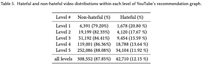
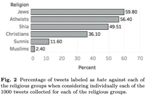
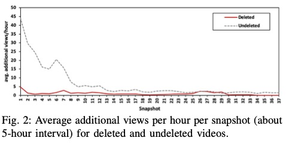
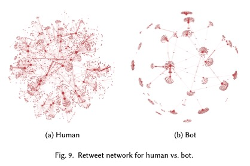
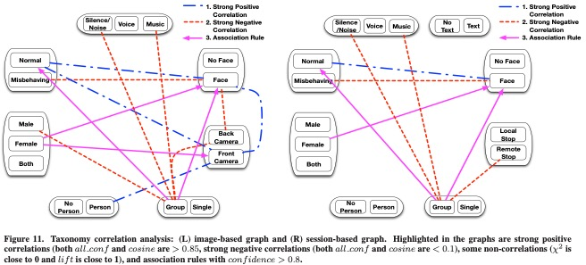

|
|
CyberSafety: Making Internet Safer for its UsersThe theme of cybersafety is an important emerging research topic that manifests itself daily as users navigate the Web and networked applications. Examples of cybersafety issues include cyberbullying, cyberthreats, using Internet to recruit minors for nefarious purposes, and posting objectionable content in video chats. These issues have a direct impact on placing trust in the services provided via the Internet. They impact the users negatively in that the users are exposed to undesirable and potentially harmful content. They also impact the service providers negatively by reducing the quality of the service they provide. |
|
|
|
|
Contact: mishras at cs dot colorado dot edu +1 303-492-4686 Links IUCRC: Pervasive Personalized Intelligence The Colorado Research Center for Democracy and Technology The CU CyberSafety Research Center Department of Computer Science University of Colorado Boulder
|
We have an extensive research agenda to address the cybersafety issues that include conducting cutting-edge research in the areas of spread of impact of technology on democracy, spread of hate speech in Arabic social media, cyberbullying in social networks, and misbehavior detection the online, video chat services. I have co-founded The Colorado Research Center for Democracy and Technology and The CU CyberSafety Research Center at CU-Boulder. I have also co-founded the series of CyberSafety workshops; the latest one is the The Fourth Workshop on Computational Methods in Online Misbehavior (CyberSafety 2019) that was co-located with The 2019 Web Conference.Spread of Hate Speech in Arabic Social Media
N. Albadi, M. Kurdi, S. Mishra. Hateful People or Hateful Bots? Detection and Characterization of Bots Spreading Religious Hatred in Arabic Social Media. In The 22nd ACM Conference on Computer Supported Cooperative Work (CSCW ’19), 20.

N. Albadi, M. Kurdi, S. Mishra. Investigating the effect of combining GRU neural networks with handcrafted features for religious hatred detection on Arabic Twitter space. SOCIAL NETWORK ANALYSIS AND MINING. 9 (1) (August 05, 2019): ARTN 41.

N. Albadi, M. Kurdi and S. Mishra. Are They Our Brothers? Analysis and Detection of Religious Hate Speech in the Arabic Twittersphere. In the proceedings of The 2018 IEEE/ACM International Conference on Advances in Social Networks Analysis and Mining (ASONAM 2018), Barcelona, Spain (August 2018).
Cyberbullying in Online Social Networks
Rahat Ibn Rafiq, Richard Han, Qin Lv, and Shivakant Mishra. BullyAlert- A Mobile Application for Adaptive Cyberbullying Detection. In the proceedings of The 11th EAI International Conference on Mobile Computing, Applications and Services (EAI MobiCASE 2020), September 2020.

R. Rafiq, H. Hosseinmardi, R. Han, Q. Lv and S. Mishra. Scalable Detection of Cyberbullying in Online Social Networks. In the proceedings of The 33rd ACM/SIGAPP Symposium On Applied Computing (SAC 2018), Pau, France (April 2018).

H. Hosseinmardi, R. Rafiq, R. Han, Q. Lv and S. Mishra. Prediction of Cyberbullying Incidents in a Media-based Social Network. In the 2016 IEEE/ACM International Conference on Advances in Social Networks Analysis and Mining (ASONAM 2016), San Francisco, CA (August 2016).
R. Rafiq, H. Hosseinmardi, S. A. Mattson, R. Han, Q. Lv, S. Mishra. Analysis and detection of labeled cyberbullying instances in Vine, a video-based social network. Social Network Analysis and Mining. 6 (1) (December 2016).
R. Rafiq, H. Hosseinmardi, S. Mattson, R. Han, Q. Lv and S. Mishra. Careful What You Share in Six Seconds: Detecting Cyberbullying Instances in Vine. In the 2015 IEEE/ACM International Conference on Advances in Social Networks Analysis and Mining (ASONAM 2015), Paris, France (August 2015).
H. Hosseinmardi, R. Rafiq, S. Li, Z. Yang, R. Han, S. Mishra and Q. Lv. A Comparison of Common Users across Instagram and Ask.fm to Better Understand Cyberbullying. In the 7th IEEE International Conference on Social Computing and Networking (SocialCom2014), Sydney, Australia (December 2014).
H. Hosseinmardi, R. Han, Q. Lv, S. Mishra and A. Ghasemianlangroodi. Towards Understanding Cyberbullying Behavior in a Semi-Anonymous Social Network. In the 2014 IEEE/ACM Interna- tional Conference on Advances in Social Networks Analysis and Mining (ASONAM 2014), Beijing, China (August 2014).
Misbehavior Detection in Online Video Chat Systems
L. Tian, R. Rafiq, S. Li, D. Chu, R. Han, Q. Lv and S. Mishra. Multi-modal Fusion for Flasher Detection in a Mobile Video Chat Application. In the 11th EAI International Conference on Mobile and Ubiquitous Systems: Computing, Networking and Services (Mobiquitous 2014), London, UK (December 2014). Note: Nominated for the best paper award.
L. Tian, S. Li, J. Ahn, D. Chu, R. Han, Q. Lv and S. Mishra. Understanding User Behavior at Scale in a Mobile Video Chat Application. In the 2013 ACM International Joint Conference on Pervasive and Ubiquitous Computing (UbiComp 2013), Zurich (September 2013).

X. Xing, Y. Liang, H. Cheng, D. Jianxun, S. Huang, R. Han, X. Liu, Q. Lv and S. Mishra. SafeVchat: A System for Obscene Content Detection in Online Video Chat Services. ACM Transactions on Internet Technology (TOIT), Volume 12 Issue 4, July 2013.
X. Xing, Y. Liang, S. Huang, H. Cheng, R. Han, Q. Lv, X. Liu, S. Mishra and Y. Zhu. Scalable Misbehavior Detection in Online Video Chat Services. In the 18th ACM SIGKDD Conference on Knowledge Discovery and Data Mining (KDD 2012), Beijing, China (August 2012).
H. Cheng, Y. Liang, X. Xing, X. Liu, R. Han, Q. Lv and S. Mishra. FGC: Fine-Grained Cascaded Classification for Efficient Misbehaving User Detection in Online Video Chat Services. In the Fifth ACM Conference on Web Search and Data Mining (WSDM 2012), Seattle, WA (February 2012).
X. Xing, Y. L. Liang, H. Cheng, J. Dang, S. Huang, R. Han, X. Liu, Q. Lv and S. Mishra. SafeVchat: Detecting Obscene Content and Misbehaving Users in Online Video Chat Services. In the 20th International World Wide Web Conference, (WWW 2011), Hyderabad, India (March 2011).
|